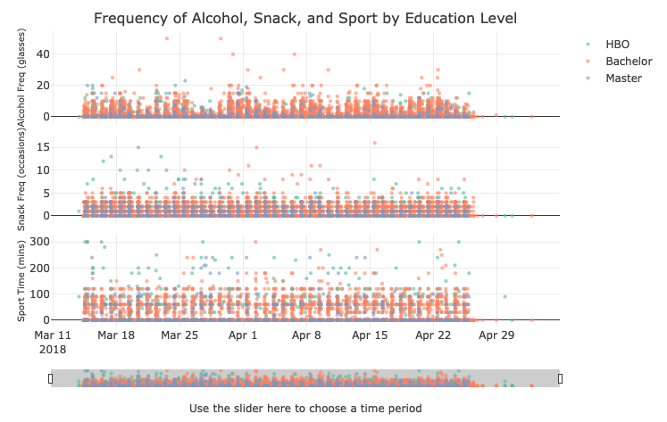

Research Projects
Using Python

- 2024.05, Coursework, Exploring the Relationship Between Flight Directions, Terminals, and Scheduled Times at Schiphol Airport, Big Data and Automated Content Analysis, University of Amsterdam [Code]
- 2023.07, Workshop, Revolution By Other Memes: Online Subcultures, Modular Ideologies And The Political Compass, Digital Methods Initiative Summer School, University of Amsterdam [Link]
- 2023.07, Workshop, The Divine Online? Mapping Algorithmic Conspirituality on TikTok, Digital Methods Initiative Summer School, University of Amsterdam [Link]
Using R

- 2024.01, Group coursework, Visualization of University Students' Alcohol Use, Snack Consumption, and Sports Participation, Using R for Data Wrangling, Analysis and Visualization, University of Amsterdam [Code]
Qualitative Studies
- 2019.08, Thesis, Females, Male Homosexuality and Gender Hegemony: A Qualitative Analysis of Boy’s Love Novels in the Chinese Context, Department of Media and Communications, London School of Economics and Political Science [Link]
- 2018.06, Thesis, Innovation in Discourse Writing of We-Media Accounts: Taking the Jiang Ge Tokyo Murder Case as an Example, School of Journalism, Renmin University of China [Link]
Undergraduate Practice
- 2017.11, Report, Innovation in Communicating Public Information with New Media - a Case Study of the Yinchuan Government, Undergraduate Research Foundation, Renmin University of China